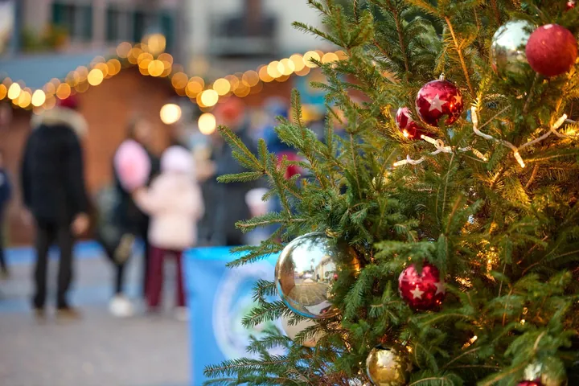

da sab 5 dic a mer 6 gen
Natale nel borgo di Malcesine
Vivi l’atmosfera unica del Natale a Malcesine! Il borgo si trasforma in un percorso di luci, racconti, spettacoli e intrattenimento, unendo il suggestivo Borgo del Castello presso il Castello Scaligero alla Corte del Castello in Piazza Statuto. Un programma per grandi e piccini…
 Indicazioni
Indicazioni
- Costi e prenotazioni
- Costo non indicato · Prenotazione non indicata
- Programma
- Programma da verificare. Apri la fonte ufficiale per orari e possibili aggiornamenti.
- In caso di maltempo
- Nessuna indicazione specifica pubblicata.
- Note
- Acquisito automaticamente dalla fonte.
L’EVENTO
Descrizione completa
Vivi l’atmosfera unica del Natale a Malcesine! Il borgo si trasforma in un percorso di luci, racconti, spettacoli e intrattenimento, unendo il suggestivo Borgo del Castello presso il Castello Scaligero alla Corte del Castello in Piazza Statuto. Un programma per grandi e piccini, tra laboratori creativi, incontri speciali, musica dal vivo e spettacoli, per vivere le festività nel cuore del nostro incantevole paesino.
Il Borgo del Castello
Le avventure di MalcesinElfo
Il Borgo del Castello accoglie grandi e piccini in un percorso tra luminarie, installazioni scenografiche e atmosfere suggestive, dedicato al mondo di MalcesinElfo. Un’esperienza da scoprire attraverso laboratori creativi, racconti e incontri con i personaggi delle feste.
La Casermetta di Malcesine
Laboratori e creatività
Dalle 14.30 alle 17.30 , la Casermetta ospita laboratori dedicati ai bambini, con attività creative ispirate al mondo dei libri e delle storie, accompagnate dagli elfi. Un’occasione per dare spazio alla fantasia e vivere momenti di gioco e condivisione.
Il Racconto delle Avventure di MalcesinElfo
Storie da ascoltare e vivere
All’esterno della Casermetta sarà allestita un’area dedicata alla narrazione, dove bambini e famiglie potranno scoprire le avventure di MalcesinElfo attraverso appuntamenti di storytelling programmati nel corso del pomeriggio.
La Corte del Castello – Piazza Statuto
Il cuore degli spettacoli e dell’intrattenimento dove la Piazza si trasformerà in zona Food e casette.
Quest’anno, la magia del Natale arriverà in anticipo in Piazza Statuto: la pista di pattinaggio sul ghiaccio sarà aperta già a partire da metà novembre e accompagnerà grandi e piccini per tutto il periodo delle festività. Un’occasione di divertimento e condivisione, pensata per ritrovarsi, trascorrere momenti speciali e vivere insieme tutta l’atmosfera delle feste.
Il tardo pomeriggio è dedicato a bambini e famiglie, con animazione, baby dance e appuntamenti speciali legati ai personaggi della tradizione natalizia. Nelle giornate dedicate, i più piccoli potranno incontrare Babbo Natale, Santa Lucia e la Befana.
Le Notti della Corte | 19.00–21.00
La sera, la Corte si trasforma in un palcoscenico a cielo aperto, con un programma di intrattenimento che alterna spettacoli musicali, performance con cantanti e acrobati, show di sabbia magica e serate di musica dal vivo. Un calendario di appuntamenti pensato per coinvolgere il pubblico e animare il cuore del borgo durante le festività.
Le Casette del Mercatino Solidale a cura di Caritas e altre associazioni del territorio, si troveranno invece presso il Giardino dell' ex Asilo Pariani con le attività solidali in favore dei bisognosi dalle 10.00 alle 16.00
IL PROGRAMMA
Programma e orari
Appuntamenti raccolti dalle fonti elencate. Dove manca un orario, non è ancora disponibile in questa scheda.
Programma pubblicato
- 2026-12-05 — 2026-12-08 ·
- 2026-12-12 — 2026-12-13 ·
- 2026-12-19 — 2026-12-20 ·
- 2026-12-23 — 2026-12-24 ·
- 2026-12-26 — 2026-12-30 ·
- 2027-01-01 — 2027-01-06 ·
INFORMAZIONI UTILI
Prima di partire
- Controllare la fonte prima di partire.
ORGANIZZAZIONE